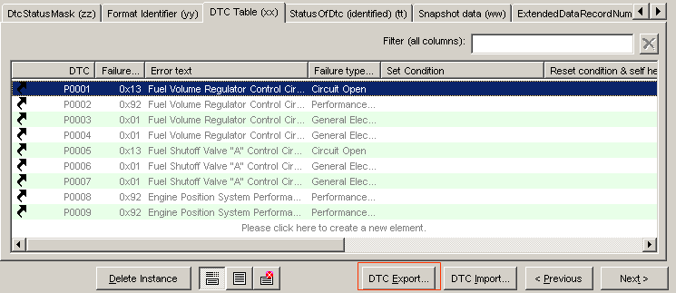
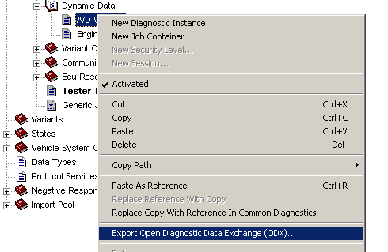
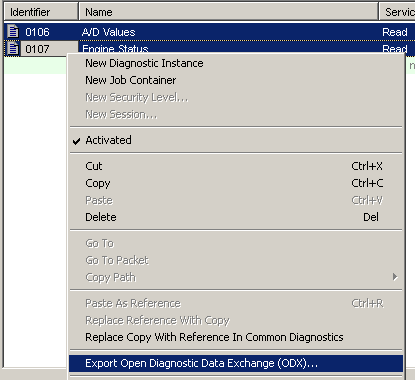

See also the Options Property Page ODX Export.
.odx, not .odx-d
.odx-d (CDS-39473 8.5)The following chapters describe parts common to the three supported versions, except the two specific chapters noted above.
| Element | Notation | Example |
|---|---|---|
| UML class attributes | Dot between parent and child element | Class.Attribute |
| XML child elements | dito | XMLelement.ChildElement |
| CANdelaStudio objects | in CamelCase | DiagInstance |
| ODX elements | as in the XML schema | PARAM |
There are three ways to create an ODX document on from a CANdela document (CDD):
[ODXE-R100] Exports to an ODX document that contains all the information of the current CANdela document.
Use ribbon tab Data Exchange | ODX Export [MENU-R120].

DTC-Export
[ODXE-R110] When the DTC list is displayed, the Button "DTC Export" can be used to create an ODX file containing only on DTC-DOP with the DTCs contained in the DTC-Table.
[ODXE-D115] ODX export does not include Events.
[ODXE-R120] In order to exchange only a subset of data, it is possible since CANdela 7.0 SP1 to perform the ODX export for selected elements only:
Export includes...
Export does not include...
odx-cs files)How to select the elements to be exported
Directly select one object [DCLUI-R500]:

Selective export of one object
Select a list of objects:
In the diagnostic instances list, you can select multiple diagnostic instances for ODX export:

Selective export of multiple objects
Warning and error messages of the ODX-Export are numbered items in the output window of CANdelaStudio.
A description of the warning and errors codes can be found in the files ASAM-ODX-Export-WarningCodes.htm and ASAM-ODX-Export-ErrorCodes.htm in the Documentation folder.
[ODXE-R1001-Warnings]
In case the ODXExport-Option [OPT-R240] is activated, the ODX-Export aborts in case a warning occurred.
[ODXE-R200] List of ODX Export Options (see the next chapter for different ways to specify the options).
| Option in CANdelaStudio.ini | Option in GUI | Description | FeatureID, Details Chapter |
|---|---|---|---|
| ExportUnreferencedDatatypes | Export only referenced data types | Controls whether not referenced data types are exported | [ODXE-R310] |
| ExportFormattedODX | Format the ODX file | Controls whether the ODX file is pretty printed | [ODXE-R300] |
| ExportBitfieldWrapperOnlyIfNecessary | Export two PARAMs for a CANdela bitfield only if necessary | Controls whether two PARAMs for a CANdela bitfield are exported. If the CANdela bitfield is used by a variant identification feature the second PARAM which uses an unstructured simple DOP is necessary. Such a PARAM can never be omitted. | [ODXE-R1100-PhysBitfield] |
| ExportProtocolLayer | PROTOCOL layer for supported interfaces | Controls whether a PROTOCOL layer (per used interface in CANdela) is exported | [ODXE-R1040-ComParam] |
| ExportAdditionalyComParamSpec | COMPARAM-SPEC | Controls the export of an additional COMPARAM-SPEC | [ODXE-R1040-ComParam] |
| ExportDescriptions | DESCRIPTION | Controls whether DESCRIPTIONs are exported | [ODXE-R320] |
| ExportDescriptionsFormatted | formatted | Controls whether formatted DESCRIPTIONs are exported as formatted DESCRIPTIONs or as unformatted DESCRIPTIONs. | |
| ExportAdditionalDocuments | with attachments | If this option is set, embedded documents referenced in descriptions are included in the output file/directory. | |
| ExportSDGsAtDTCDOP | SDG at DTC-DOP | Controls whether SDGs are exported at DTCs. | [ODXE-R1100-FaultMem] |
| ExportVehicleInfoSpec | VEHILCE-INFO-SPEC | Toggles export of VehicleInfoSpec | [ODXE-R1130] |
| ExportCANdelaServiceInfo | CANdela service information | Toggles export of CANdelaDiagServiceInfo | [ODXE-R1080-ExportService] |
| ExportEcuSharedData | Contained ECU-SHARED-DATA | Toggles export of contained ECU-SHARED-DATA | [ODXE-R1120] |
| ExportCANdelaTemplateInformation | Toggles export of CANdelaTemplateInformaton | [ODXE-R1030-Template] | |
| ExportUniqueEcuVariantShortNames | Make ECU-VARIANT-SHORT-NAMEs unique | Generate unique ECU-VARIANT-SHORT-NAMEs | [ODXE-R1050-Unique] |
| ExportonlyJAVAJobs | Export only JAVA Jobs (no other ones) | Prevents non JAVA-Jobs from being exported | [ODXE-R1090-Jobs] |
| ExportOIDs | ObjectID (OID) | Exports unique ObjectIdentifiers | [ODXE-R1020-OID] |
| ExportOneFilePerDiagLayer | One separate File per DIAG-LAYER | Exports a separate FILE per DIAG-LAYER | [ODXE-R1050-Files] |
| ForceLocalODXExport | Always use local ODX Export installation | See [DXEXE-R110]. | |
| SaveLogMessagesAsComment | Store log messages within ODX File | Store the warnings that occur during OdxExport in the generated file | [ODXE-R1030-Log] |
| UsePrefixesForHierarchicalIds | ODX ID: Use ECU qualifiers as prefix | Use ECU-Qualifier as prefix for IDs | [ODXE-R1020-ID] |
| ExportTmxFile | TMX-file (multi-language ODX) | In case the option is activated, a TMX file is generated from the Translations present in the document | [ODXE-R1160] |
| ExportOnlyModifiedComparams | Only necessary COMPARAM-REFs | A COMPARAM-REF will be only generated if the value from CANdela differs from the COMPARAM-SPEC value. | [ODXE-R1040-ComParam] |
| ExportDTCPoolAsESD | Available DTCs as ECU-SHARED-DATA | The DTCs from DTC pool will be exported to an ECU-SHARED-DATA. The BASE-VARIANT and ECU-VARIANTs will reference the DTCs from ESD. | [ODXE-R1040-ComParam] |
| OptimizeDTCs | Reuse DTCs | ODX-Export will generate for similar DTCs a DTC-REF. | [ODXE-R1100-ReuseDTCs] |
| TreatWarningsAsErrors | Abort on warnings | If this option is activated the ODX-Export will abort as soon as a warning occurs while generating the ODX files. | [ODXE-R1001-Warnings] |
| UseIsoComparamSpecs | ISO-COMPARAM-SPECs | The ISO COMPARAM-SPEC will be exported. | [ODXE-R1040-ComParam] |
| CreateMatchingRequestParamForPosResponse | Create MATCHING-REQUEST-PARAM in response | Creates an additional MATCHING-REQUEST-PARAM for the subfunction/local-id | [ODXE-R1080-Matching] |
| ExportPosResponseSuppressable | Use POS-RESPONSE-SUPPRESSABLE (ODX 2.2.0) | Usage of POS-RESPONSE-SUPPRESSABLE in contrast to exporting two DIAG-SERVICEs | [ODXE-R1080-DiagClass] |
| UseSnrefs | Toggles the usage of SNREFs to TABLEs / TABLE-ROWs | [ODXE-R1070-SNRefs] | |
| CreateHierarchicalIds | Controls whether hierarchical IDs are used or not. | [ODXE-R1020-HierarchicalIDs] | |
| CreateNRCConst | Controls whether NRC-Const parameters are exported | ||
| SkipPureFunctionalServices | Allows to skip services at BV which are only functionally addressable. | [ODXE-R1080-Service] | |
| ExportSeparateDopsForEcuConfig | Defines whether DOPs are exported locally in the ECU-CONFIG | [ODXE-R1180] | |
| CreateAdditionalServiceForCombinedDIDs | Defines whether an additional service is exported to express "Maybecombined" | [ODXE-R1080-Combined] | |
| RolloutNestedPackets | Enforces that Packet datatypes are not exported as STRUCTURE | [ODXE-R1110-Flat] | |
| OptimizeEnvDatas | Reuse identical environment data | Combines ENV-DATA according to used parameters. | [ODXE-R1000-EnvData] |
| AllowSpecialCharactersInFileNames | If this option is set to '0', only characters [a-zA-Z0-9_] are allowed for file names, any other character is removed. | ||
| CheckStringTerminations | Emits a warning in case the selected string termination is not valid for ODX. | [ODXE-R1100-Term65] | |
| CombineNegResponsesPerService | Combines the negative response of a service into one negative response. | ||
| CreateSeparateServiceForDuplicateTableKeys | If an identifier is dublicate in a Diagnostic Class and the Diagnostic Class is exported as table, a separate ODX service is generated. | ||
| DeactivateSharing | Controls whether services that are referenced in a variant get exported. | [ODXE-R1050-Inherit] | |
| ExportContainedJobFiles | Controls whether job files get exported or not. | [ODXE-R1090-Jobs] | |
| ExportStructuresForBitfields | Controls whether a STRUCTURE gets created for a BITFIELD. | [ODXE-R1100-Bitfields] | |
| ExportTextTablesForTableKeys | Exports Text Tables for Table Keys. | ||
| GenerateUniqueStructureShortNames | Enforces unique SHORT-NAMEs for STRUCTUREs. | ||
| MakeDiagServiceShortNamesUnique | Ensures unique DIAG-SERVICE SHORT-NAMEs. | ||
| OptimizeNegResponses | Creates global neg responses instead of local ones. |
Table 1: ODX export options
See the CANdelaStudio Options Property Page ODX Export.
The following extract of CANdelaStudio.ini shows how you can set the options:
[View]
SAECodes=1
[ODX20Export]
ExportFormattedODX=1
ExportUnreferencedDatatypes=1
ExportBitfieldWrapperOnlyIfNecessary=1
ExportProtocolLayer=0
ExportDescriptions=1
ExportSDGsAtDTCDOP=1
ExportAdditionalyComParamSpec=0
ExportDescriptionsFormatted=1
ExportVehicleInfoSpec=0
ExportCANdelaServiceInfo=1
ExportEcuSharedData=1
ExportUniqueEcuVariantShortNames=0
ExportonlyJAVAJobs=0
ExportOIDs=0
ExportOneFilePerDiagLayer=0
SaveLogMessagesAsComment=0
CreateUniqueIds=1
ExportTmx=1
OptimizeDTCs=1
TreatWarningsAsErrors=1
ExportIsoComparamSpecs=1
ExportPosResponseSuppressable=1
CreateMatchingRequestParamForPosResponse=0
UseSnrefs=0
CreateNRCConst=1Note: the INI option [View]SAECodes [OPT-R260] controls whether the element DISPLAY-TROUBLE-CODE is exported for a DTC or not.
To predefine ODX Export Settings in the template, create an Enum Attribute in the category "odxexportoption" with the following properties:
ODX Export Reference: